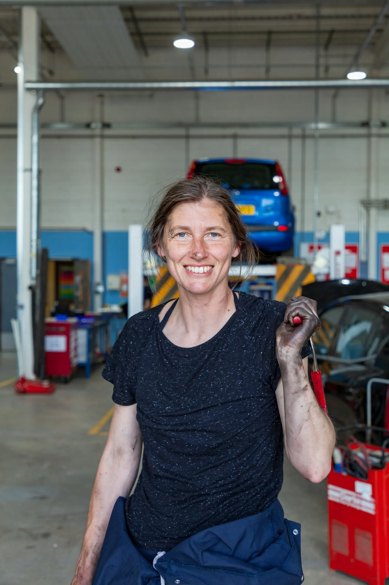
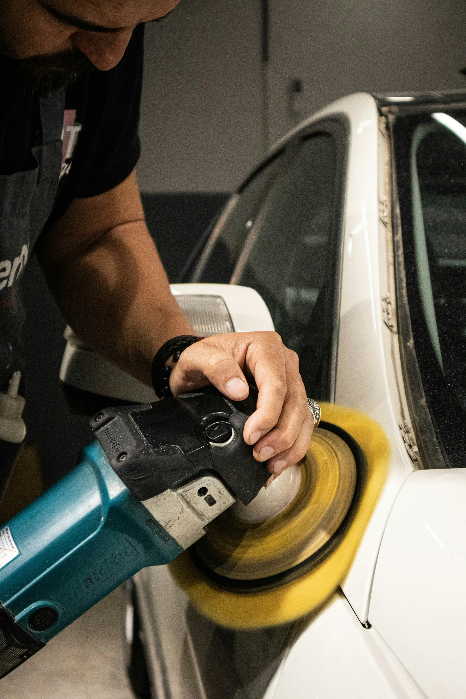
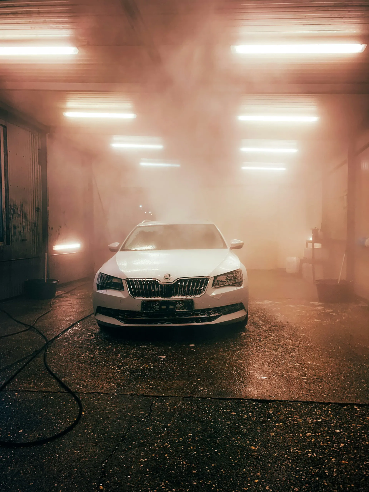
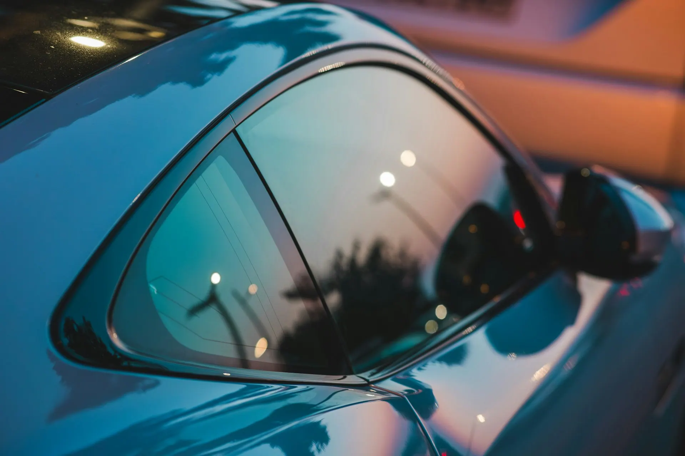
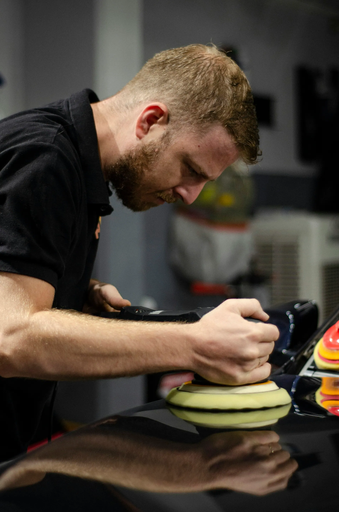

Bay 01Dana Whitfield
Owner · Coatings
Opened the shop in 2015. Does every 7-year coating herself and signs the warranty card.
Clear Lake · Houston, TX · Since 2015
Paint correction, ceramic coating and window tint for Bay Area drivers. Every coated car spends the night in a climate-controlled cure room, because Gulf humidity doesn't wait for anyone.

Bay 01Owner · Coatings
Opened the shop in 2015. Does every 7-year coating herself and signs the warranty card.
Tint lead
Eleven years of window film. Meters every window before the car leaves, and shows you the reading.
Paint correction
Runs the polishers in Bay B. Sends the before-and-after photos you'll get by text.
Dana Whitfield spent nine years on a fleet maintenance crew in Clear Lake before she rented her own bay. The shop still runs on the same idea: one car at a time, and the customer sees every step.
Dana Whitfield, owner
Mostly trucks from the refinery shift, washed and polished after work. Booked by text, paid on pickup.
Texas sun cracks a dashboard by August. We add ceramic film and read every window with a meter before the car leaves.
Coatings set badly in Gulf humidity, so we sealed a room and keep it at 68°F and 45 percent. That's why coated cars stay overnight.
Book a bay with your car's make and model, and get photos of the paint at every stage by text.
We text a photo when your car comes in, another after correction and one before pickup. Reply on the same thread with any question.
Book a bay



“They sent me photos of my paint under the light before they started. I didn't know my truck had that many swirls. It doesn't now.”
“Marco metered every window and showed me the number so I'd know it was legal. Car is ten degrees cooler at the Kemah lot.”
“Dropped it off Tuesday morning, picked it up Wednesday. The coating beads water like nothing I've had before.”
Drop-offs from 8 AM. Evening pickups by appointment.
455 Orbit Way, Bay CPull into the striped lane in front of Bay C and leave the keys with us. Customer parking and a covered bench on the left side of the building.
| Monday | 8 AM – 6 PM |
|---|---|
| Tuesday | 8 AM – 6 PM |
| Wednesday | 8 AM – 6 PM |
| Thursday | 8 AM – 6 PM |
| Friday | 8 AM – 6 PM |
| Saturday | 9 AM – 3 PM |
| Sunday | Closed |
Coatings: drop off in the morning, pick up the next afternoon, because the coating cures overnight. Tint takes about three hours, so most people wait or come back after lunch.
Yes. Front side windows stay at 25 percent or lighter, the Texas limit, and we meter every window before you leave. Rear windows can go darker.
Wait seven days. After that, hand wash with pH-neutral soap. You leave with a small kit and a card with the steps.
Yes, most of our cars are trucks. Prices go up 15 to 25 percent with size, and we confirm the total before we start.
The office and waiting area are step-free with an accessible restroom. Call ahead and we'll meet you at the curb for the keys.